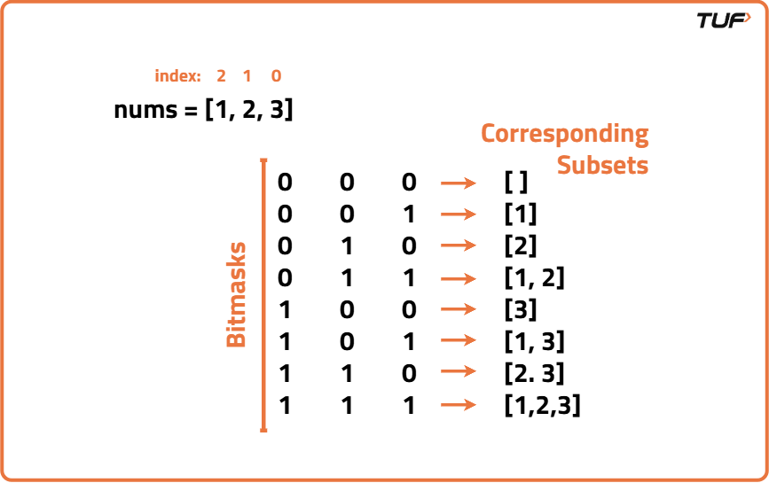

Power Set | Bit Manipulation
Problem Statement: Given an array of numbers, print all subsets of it using bitwise operators.
Examples
Input: nums = [1, 2, 3] Output: [[ ], [1], [2], [3], [1, 2], [2, 3], [3, 1], [1, 2, 3]] Explanation: A power set of an array is an array of all possible subarrays, including an empty array. It contains all combinations of elements from the original array. By iterating through all possible combinations of the elements in the input array we are able to get the power set of the array.
Input: nums = [5, 7, 8] Output: [[ ], [5], [7], [8], [5, 7], [7, 8], [8, 5], [5, 7, 8]] Explanation: A power set of an array is an array of all possible subarrays, including an empty array. It contains all combinations of elements from the original array. By iterating through all possible combinations of the elements in the input array we are able to get the power set of the array.
Disclaimer: Don’t jump directly to the solution, try it out yourself first.
Approach
Algorithm
This problem has already been previously solved using Recursion here:Power Set: Recursion.
To solve it using bit wise operators, we observe a pattern that the number of subsets is dependant on the size of the input array as:- N = 1, No. of subsets = 2
- N = 2, No. of subsets = 4
- N = 3, No. of subsets = 8 and so on…
No. of subsets of input array of size N = 2N = [1 << n]

Hence we can associate each subset with a number in the range 0 to 2N-1. Each of these numbers represents a bitmask where each bit indicates whether the corresponding element from the input array is included in the current subset or not.- Create an empty array to hold all the subsets of the input array.
- Determine the size of the power set, which is 2N, where N represents the number of elements in the input array.
- Iterate through all possible numbers from 0 to 2N-1: Each number represents a unique combination of elements in the input array.
- For each number, generate the corresponding subset.
- After constructing each subset, add it to the array of subsets.
- Return the array containing all the subsets of the input array.
Code
#include <bits/stdc++.h>
using namespace std;
class Solution {
public:
// Function to generate all subsets (the power set) of the input array
vector<vector<int>> getPowerSet(vector<int>& nums) {
// Get the size of the input array
int n = nums.size();
// Calculate the total number of subsets (2^n) using bitwise shift
int subsets = 1 << n;
// Vector to store all subsets
vector<vector<int>> ans;
// Iterate through all numbers from 0 to 2^n - 1
for (int num = 0; num < subsets; num++) {
// Temporary vector to hold the current subset
vector<int> subset;
// Iterate through each bit of the number
for (int i = 0; i < n; i++) {
// If the ith bit is set, include nums[i] in the subset
if (num & (1 << i)) {
subset.push_back(nums[i]);
}
}
// Add the constructed subset into the result
ans.push_back(subset);
}
// Return all subsets
return ans;
}
};
// Driver code
int main() {
// Input array
vector<int> nums = {5, 7, 8};
// Create object of Solution
Solution obj;
// Call function to generate subsets
vector<vector<int>> subsets = obj.getPowerSet(nums);
// Print original input array
cout << "Initial Input Array: ";
for (auto num : nums) {
cout << num << " ";
}
cout << endl;
// Print all subsets
cout << "Subsets: " << endl;
for (auto subset : subsets) {
cout << "[ ";
for (auto num : subset) {
cout << num << " ";
}
cout << "]" << endl;
}
return 0;
}
Complexity Analysis
Time Complexity: O(N x 2N) where N is the number of elements in the input array. Iterating through all possible numbers from 0 to 2N-1 where N is the number of elements in the input array requires O(2N) iterations.For each iteration, we perform O(N) operations to construct the corresponding subset by interpreting the bits of the number.
Space Complexity: O(N x 2N) where N is the number of elements in the input array. We store all subsets in a list. Since there are 2N subsets in the power set, each subset can have at most N elements.